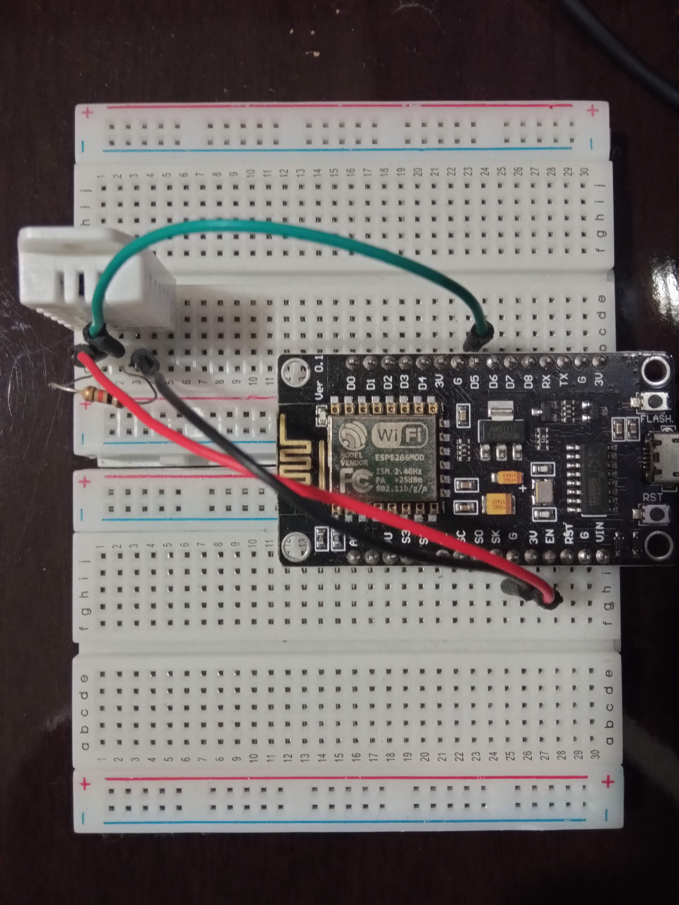

Manual de utilizaçãoTodos os arquivos necessários para o projeto, inclusive o código desse site estão disponibilizados no GitHub O sistema possui duas partes: O hardware (ESP8266 e DHT22) responsável por medir a Temperatura e a Humidade ambiente e enviar esses dados para a nuvem, e um sistema web que exibe essas informações para o usuário. Para começar basta ligar o NodeMCU (ESP8266) com uma tensão de 5 volts, usando um conector micro-USB. Caso não tenha a IDE do arduíno instalada, será necessário que faça a instalação para o próximo passo Instale também todas as bibliotecas necessárias Agora é necessário que seja ajustado na IDE dois parâmetros, o Wifi e o intervalo desejado entre as medições. Posteriormente basta colocar o dispositivo no local que deseja fazer as medições. Os dados são exibidos aqui neste site, que está sendo disponibilizado através do Firebase pelos serviços (Firebase Realtime database e Firebase Hosting), nele é possível ver a medição mais recente, o gráfico com o histórico e também gerar relatório detalhado em forma de planilha. Pronto! Após seguir esses passos, você conseguirá de forma fácil monitorar a Temperatura e humidade ambiente |
 |